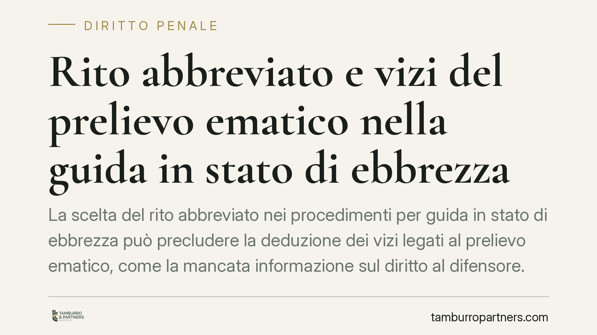

Rito abbreviato e vizi del prelievo ematico nella guida in stato di ebbrezza
La scelta del rito abbreviato nei procedimenti per guida in stato di ebbrezza può precludere la deduzione dei vizi legati al prelievo ematico, come la mancata informazione sul diritto al difensore. Un orientamento della Cassazione lega inoltre l'esclusione della particolare tenuità del fatto ai tassi alcolemici più elevati. Vediamo perché la decisione sul rito incide sulla strategia difensiva.

Il punto giuridico
Nei procedimenti per guida in stato di ebbrezza (art. 186 del Codice della Strada) accade spesso che il prelievo ematico in ospedale avvenga senza che l'indagato sia avvisato della facoltà di farsi assistere da un difensore. Questa omissione integra una nullità di ordine generale a regime intermedio, ossia un vizio che non è insanabile ma che va eccepito entro termini precisi, a pena di decadenza.
Un orientamento della Corte di Cassazione penale, formatosi in materia, afferma che la richiesta di rito abbreviato ha effetto sanante su queste nullità: chi sceglie di essere giudicato allo stato degli atti, rinunciando al dibattimento, accetta il materiale probatorio raccolto e non può più far valere i vizi che avrebbe dovuto dedurre prima. Il principio, pur corretto in linea generale, va sempre verificato nella sua portata concreta e nella pronuncia specifica che lo esprime.
Inquadramento normativo
La cornice processuale è data dal combinato disposto degli articoli 178, 180 e 182 del codice di procedura penale.
L'art. 178, lett. c), c.p.p. riconduce alle nullità di ordine generale la violazione delle disposizioni sull'assistenza dell'imputato, categoria cui si ascrive l'omesso avviso sul diritto al difensore durante il prelievo. L'art. 180 c.p.p. fissa i termini entro cui le nullità a regime intermedio possono essere dedotte o rilevate, legandoli allo stato e al grado del procedimento. L'art. 182 c.p.p. disciplina, infine, la deducibilità e le cause di sanatoria: la nullità non può essere eccepita da chi vi abbia dato causa o da chi vi abbia rinunciato, anche in modo tacito.
Sul piano sostanziale, l'art. 186, comma 2, CdS gradua l'illecito su tre fasce: la lett. a) per tassi fino a 0,8 g/l (illecito amministrativo), la lett. b) tra 0,8 e 1,5 g/l e la lett. c) oltre 1,5 g/l, con pene progressivamente più severe. Il giudizio sulla particolare tenuità del fatto ex art. 131-bis c.p. — causa di non punibilità per condotte di offensività minima — si rapporta tipicamente alla fascia superiore: un tasso molto elevato, collocato nella lett. c), rende di norma incompatibile la qualificazione del fatto come tenue.
Implicazioni pratiche
Per chi è imputato di guida in stato di ebbrezza, la decisione sul rito diventa un vero bivio strategico.
Da un lato, il rito abbreviato offre una riduzione di pena di un terzo e una definizione più rapida. Dall'altro, comporta la rinuncia a eccezioni procedurali che, nel giudizio ordinario, potrebbero fondare la richiesta di esclusione degli esiti del prelievo. Se la prova dell'ebbrezza poggia in modo determinante sull'analisi del sangue acquisita in violazione delle garanzie difensive, la scelta del rito abbreviato rischia di consolidare quella prova anziché metterla in discussione.
Nel giudizio ordinario, invece, il vizio del prelievo può fondare un'eccezione tempestiva, da sollevare nei termini dell'art. 180 c.p.p. La valutazione non è astratta: dipende da quanto l'accertamento alcolemico pesi nel quadro probatorio complessivo e dall'eventuale presenza di elementi sintomatici autonomi (andatura, eloquio, verbali della polizia giudiziaria).
Cosa fare in concreto
- Richiedete subito copia integrale degli atti, incluso il verbale del prelievo ospedaliero, per accertare se l'avviso sul diritto al difensore sia stato dato.
- Valutate l'incidenza della prova ematica sul capo d'imputazione: se è decisiva e viziata, soppesate con attenzione la rinuncia connessa al rito abbreviato.
- Rispettate i termini di deduzione delle nullità a regime intermedio prima di qualsiasi scelta che comporti sanatoria tacita.
- Verificate la fascia alcolemica contestata: oltre 1,5 g/l la strada della tenuità del fatto è normalmente preclusa, ma la difesa può orientarsi su circostanze e commisurazione della pena.
- Decidete il rito solo dopo un confronto tecnico che metta a confronto il beneficio della riduzione di pena con le eccezioni rinunciate.
Contributo informativo a cura di Tamburro & Partners - Avv. Giuseppe Tamburro. Non costituisce parere legale.
Ogni condominio ha una storia a sé.
Se gestisci un'amministrazione e vuoi un confronto su una specifica questione condominiale, scrivi allo studio. Ti rispondiamo entro un giorno lavorativo.